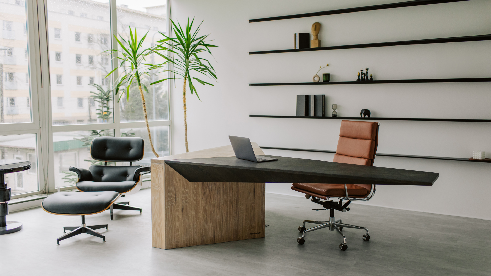
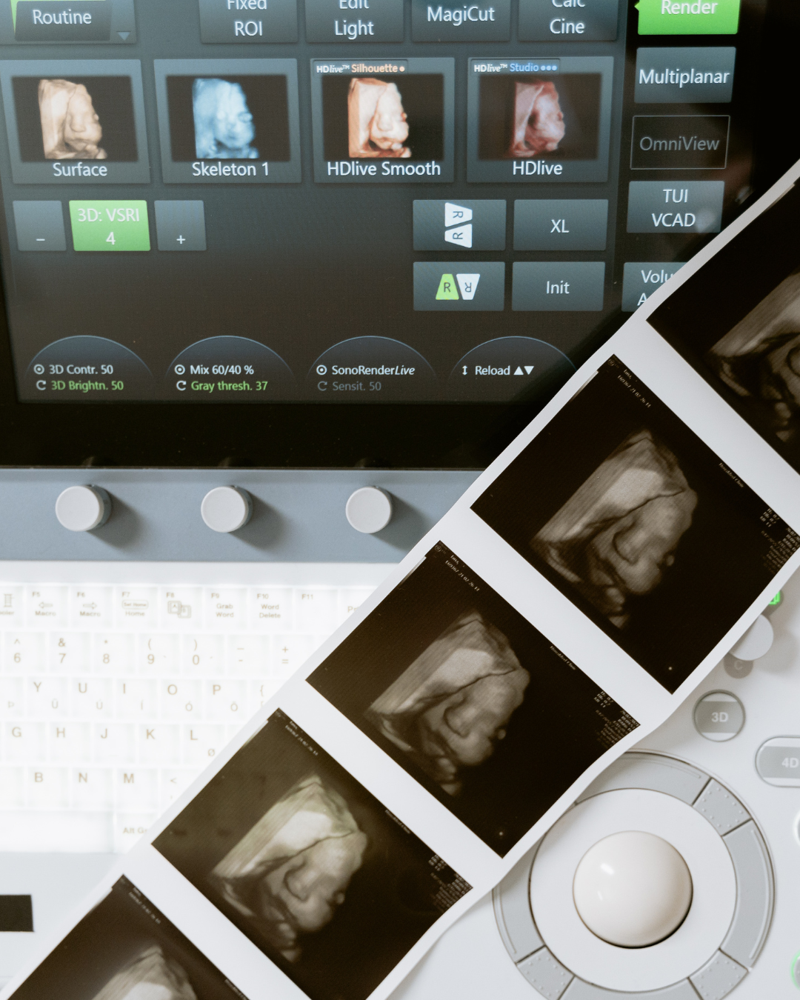
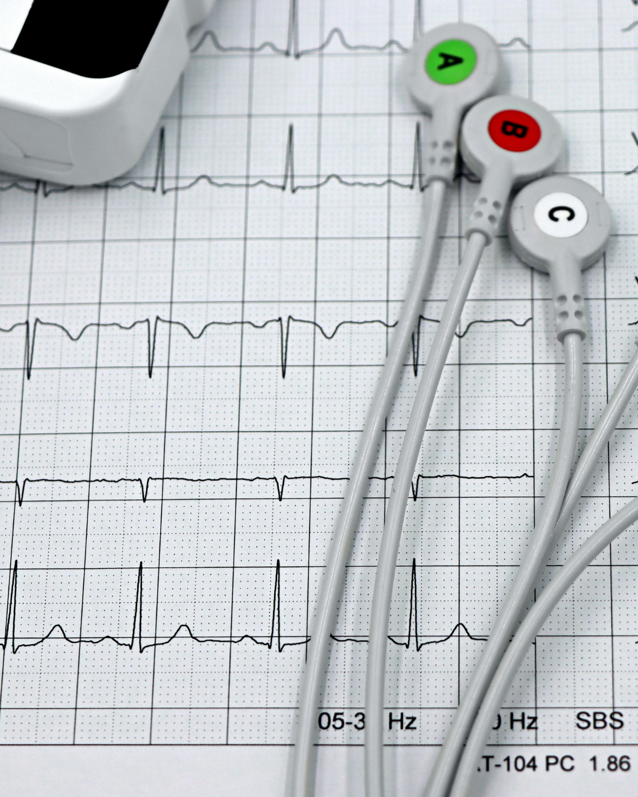
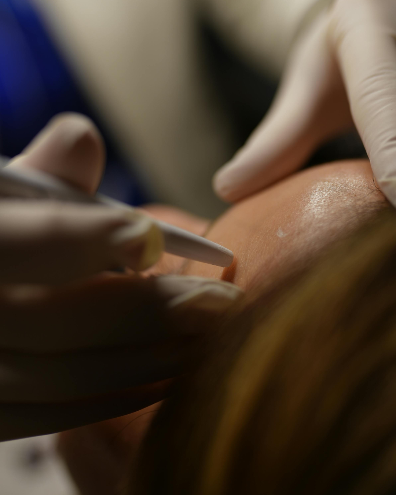
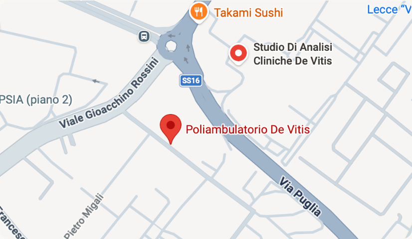

Perché nasce il poliambulatorio
*Sundays are for rest, recipe testing, and probably more cookies.
Un ambiente accogliente dove trovare specialisti
qualificati, percorsi personalizzati e tempi rapidi.
*Sundays are for rest, recipe testing, and probably more cookies.

Orders placed after 4 PM roll over to the next morning’s bake. Still oven-fresh, never frozen.
Orders placed after 4 PM roll over to the next morning’s bake. Still oven-fresh, never frozen.




Lun-Sab: 9.00 - 19.00
(si riceve solo su appuntamento)
Via Cicolella, 3
Lecce (LE) 73100
Just fill in your cravings! Tell us what you
want, how much you need, and when you’d
like it.